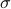
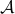

Applied Probability (MATH 619)
Review of preliminaries
– Main objects: probability space , events , probability
– Basic properties: countable additivity or -additivity, continuity of probability
– Random variables, expectation and variance for discrete random variables, product spaces, pushforward of probability and change-of-variable formula
– Important inequalities: Markov, Chebyshev, Hoeffding-Chernoff and its special case (Chernoff-Okamoto bound), why Hoeffding-Chernoff is stronger than CLT,
Bennet's inequality and its relaxed case (Bernstein's inequality), Holder's inequality, Minkowski inequality
– Poisson approximation of binomial, Lindebergh's CLT (important idea: probability as expected value of indicator)
Probability spaces
– Definitions: algebra , -algebra, probability , smallest -algebra , semi-algebra , : smallest algebra that conatins
– Construction of probability spaces , outer and inner measure and Caratheodory extension theorem, Monotone Class Theorem, approximation
, outer and inner measure and Caratheodory extension theorem, Monotone Class Theorem, approximation
lemma, CDF, how to construct from CDF (use Heine-Borel Theorem), Borel -algebra and its extension to product spaces
Measurable maps and random variables
– Inverse maps, measurable space, measurable functions and random variables, measurable random vectors
– Induced probability measure: composition, measurability and continuity, measurability and limits
– -algebra generated by maps
Integration and expectation
– Simple functions and measurability
– Definition of expectation and its properties (for simple functions), positive measurable functions or random variables
– Monotone Convergence Theorem (MCT) for positive measurable functions, definition of expectation and MCT for general measurable functions, Fatou lemma,
Dominated Convergence Theorem (DCT)
– Expectation as integral, Lebesgue measure, distribution and density of a random variable, change-of-variables theorem, Riemann vs Lebesgue integral
– Product -algebra and product probability measure, Fubini-Torelli theorem
Independence
– Definition of independent events, -algebras and random variables
– Dyadic expansion of uniform random variables, quantile transorm lemma
– Groupings, Borel-Cantelli lemma and its applications: uniform continuity of integral, if iid exponential with then ,
Borel zero-one law, Kolmogorov zero-one law: tail -algebra and applications, Savage-Hewitt zero-one law
Modes of Convergence
– Sure, almost-sure, in probability and in distribution
– convergence: uniform integrability, results on convergence
– is a complete normed vector space for , Riesez-Frechet theorem, absolute continuity of one measure w.r.t other, Radon-Nikodyn derivative
, Riesez-Frechet theorem, absolute continuity of one measure w.r.t other, Radon-Nikodyn derivative
theorem (von Neumann proof)
Convergence of random series
– Truncation and equivalence, WLLN
– Almost sure convergence of sum of independent (but not necessarily iid) random variables
– Kolmogorov's inequality, SLLN, Kronecker's lemma
– Kolmogorov's three series theorem
Conditional expectation and martingales
– Conditional expectation: definition, examples, existence and uniqueness
– Properties of conditional expectation: ten properties
– Martingales: definition, submartingale and supermartingale, reverse martingale, examples
– Martingale inequalities: Doob's inequality, Kolmogorv's second inequality, Doob's upcrossing inequality
– Uniform integrability and martingales, sub and supermartingales, convergence theorems, reverse submartingale theorem
– Applications of martingale convergence theorems: Levy's convergence theorem and its corollary, different proof of Kolmogorov zero-one law, probabilistic proof of
the fact that continuous functions are dense in , Polya's urn scheme
– Stopping times: definition of and , properties, example: double down strategy of betting, random walk
and , properties, example: double down strategy of betting, random walk